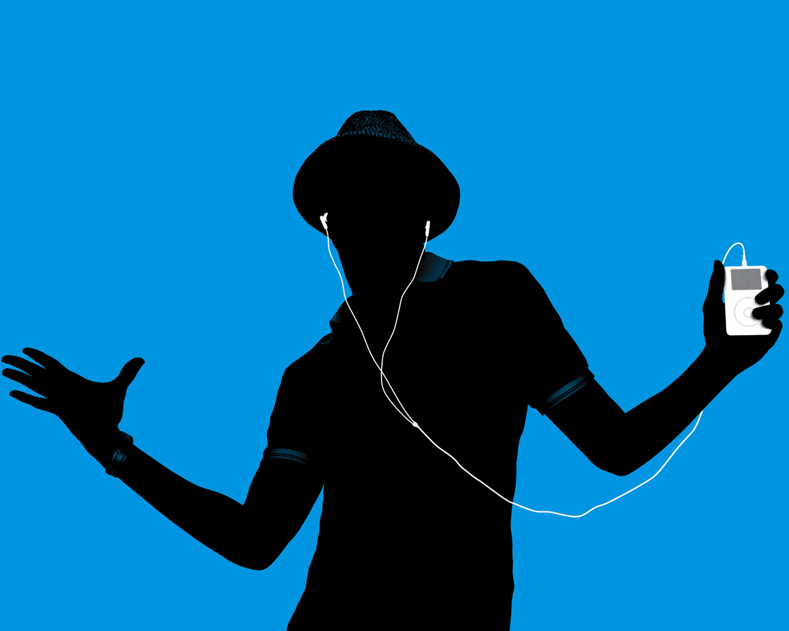

Müzik Dünyama HOŞGELDİN
Bu sayfada neler mi var? Eğlenceli anketler, müzik bilgini zorlayacak testler, sevdiğim sanatçılara ait bilgiler, albümler ve çok daha fazlası.

Bu sayfada neler mi var? Eğlenceli anketler, müzik bilgini zorlayacak testler, sevdiğim sanatçılara ait bilgiler, albümler ve çok daha fazlası.